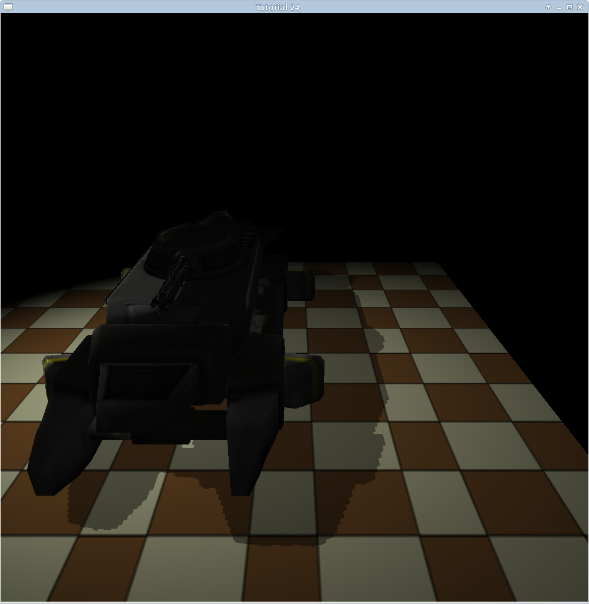
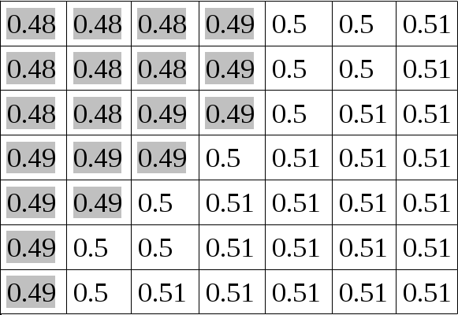
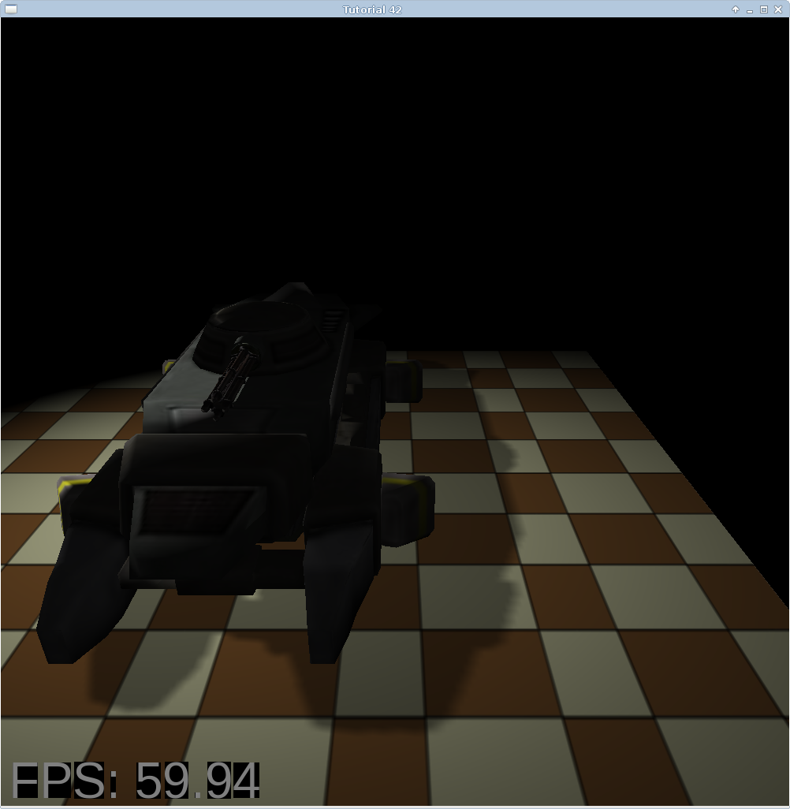

Background
In tutorial 24 we saw how to implement shadows using a technique called Shadow Mapping. The shadows that result from Shadow Mapping aren't that great and there is quite a lot of aliasing there, as you can see in the following picture:
This tutorial describes a method (one of many) to reduce that problem. It is called Percentage Closer Filtering, or PCF. The idea is to sample from the shadow map around the current pixel and compare its depth to all the samples. By averaging out the results we get a smoother line between light and shadow. For example, take a look at the following shadow map:
Each cell contains the depth value for each pixel (when viewed from the light source). To make life simple, let's say that the depth of all the pixels above is 0.5 (when viewed from the camera point of view). According to the method from tutorial 24 all the pixels whose shadow map value is small than 0.5 will be in shadow while the ones whose shadow map value is greater than or equal to 0.5 will be in light. This will create a hard aliased line between light and shadow.
Now consider the following - the pixels that are nearest the border between light and shadow are surrounded by pixels who shadow map value is smaller than 0.5 as well as pixels whose shadow map value is greater than or equal to 0.5. If we sample these neighboring pixels and average out the results we will get a factor level that can help us smooth out the border between light and shadow. Ofcourse we don't know in advance what pixels are closest to that border so we simply do this sampling work for each pixel. This is basically the entire system. In this tutorial we will sample 9 pixels in a 3 by 3 kernel around each pixel and average out the result. This will be our shadow factor instead of the 0.5 or 1.0 which we have used as a factor in tutorial 24.
Let us now review the source code that implements PCF. We will do this by going over the changes made to the implementation of tutorial 24. You may want to do a short refresh on that tutorial to make things clearer here.
Source walkthru
(lighting.fs:64)
uniform sampler2DShadow gShadowMap;
#define EPSILON 0.00001
float CalcShadowFactor(vec4 LightSpacePos)
{
vec3 ProjCoords = LightSpacePos.xyz / LightSpacePos.w;
vec2 UVCoords;
UVCoords.x = 0.5 * ProjCoords.x + 0.5;
UVCoords.y = 0.5 * ProjCoords.y + 0.5;
float z = 0.5 * ProjCoords.z + 0.5;
float xOffset = 1.0/gMapSize.x;
float yOffset = 1.0/gMapSize.y;
float Factor = 0.0;
for (int y = -1 ; y <= 1 ; y++) {
for (int x = -1 ; x <= 1 ; x++) {
vec2 Offsets = vec2(x * xOffset, y * yOffset);
vec3 UVC = vec3(UVCoords + Offsets, z + EPSILON);
Factor += texture(gShadowMap, UVC);
}
}
return (0.5 + (Factor / 18.0));
}
This is the updated shadow factor calculation function. It starts out the same where we manually perform perspective divide on clip space coordinates from the light source point of view, followed by a transformation from the (-1,+1) range to (0,1). We now have coordinates that we can use to sample from the shadow map and a Z value to compare against the sample result. From here on things are going to roll a bit differently. We are going to sample a 3 by 3 kernel so we need 9 texture coordinates altogether. The coordinates must result in sampling texels that are on one texel intervals on the X and/or Y axis. Since UV texture coordinates run from 0 to 1 and map into the texel ranges (0, Width-1) and (0, Height-1), respectively, we divide 1 by the width and height of the texture. These values are stored in the gMapSize uniform vector (see sources for more details). This gives us the offset in the texture coordinates space between two neighboring texels.
Next we perform a nested for loop and calculate the offset vector for each of the 9 texels we are going to sample. The last couple of lines inside the loop may seem a bit odd. We sample from the shadow map using a vector with 3 components (UVC) instead of just 2. The last component contains the value which we used in tutorial 24 to manually compare against the value from the shadow map (the light source Z plus a small epsilon to avoid Z-fighting). The change here is that we are using a sampler2DShadow as the type of 'gShadowMap' instead of a sampler2D. When sampling from a shadow typed sampler (sampler1DShadow, sampler2DShadow, etc) the GPU performs a comparison between the texel value and a value that we supply as the last component of the texture coordinate vector (the second component for 1D, the third component for 2D, etc). We get a zero result if the comparison fails and one if the comparison succeeds. The type of comparison is configured using a GL API and not through GLSL. We will see this change later on. For now, just assume that we get a zero result for shadow and one for light. We accumulate the 9 results and divide them by 18. Thus we get a value between 0 and 0.5. We add it to a base of 0.5 and this is our shadow factor.
(shadow_map_fbo.cpp:39)
bool ShadowMapFBO::Init(unsigned int WindowWidth, unsigned int WindowHeight)
{
// Create the FBO
glGenFramebuffers(1, &m_fbo);
// Create the depth buffer
glGenTextures(1, &m_shadowMap);
glBindTexture(GL_TEXTURE_2D, m_shadowMap);
glTexImage2D(GL_TEXTURE_2D, 0, GL_DEPTH_COMPONENT32, WindowWidth, WindowHeight, 0, GL_DEPTH_COMPONENT, GL_FLOAT, NULL);
glTexParameteri(GL_TEXTURE_2D, GL_TEXTURE_MIN_FILTER, GL_LINEAR);
glTexParameteri(GL_TEXTURE_2D, GL_TEXTURE_MAG_FILTER, GL_LINEAR);
glTexParameteri(GL_TEXTURE_2D, GL_TEXTURE_COMPARE_MODE, GL_COMPARE_REF_TO_TEXTURE);
glTexParameteri(GL_TEXTURE_2D, GL_TEXTURE_COMPARE_FUNC, GL_LEQUAL);
glTexParameteri(GL_TEXTURE_2D, GL_TEXTURE_WRAP_S, GL_CLAMP_TO_EDGE);
glTexParameteri(GL_TEXTURE_2D, GL_TEXTURE_WRAP_T, GL_CLAMP_TO_EDGE);
glBindFramebuffer(GL_FRAMEBUFFER, m_fbo);
glFramebufferTexture2D(GL_FRAMEBUFFER, GL_DEPTH_ATTACHMENT, GL_TEXTURE_2D, m_shadowMap, 0);
// Disable writes to the color buffer
glDrawBuffer(GL_NONE);
// Disable reads from the color buffer
glReadBuffer(GL_NONE);
GLenum Status = glCheckFramebufferStatus(GL_FRAMEBUFFER);
if (Status != GL_FRAMEBUFFER_COMPLETE) {
printf("FB error, status: 0x%x\n", Status);
return false;
}
return true;
}
This is how we configure our shadow map texture to work with the shadow sampler in the shader instead of the regular sampler. There are two new lines here and they are marked in bold face. First we set the texture compare mode to 'compare ref to texture'. The only other possible value for the third parameter here is GL_NONE which is the default and makes the sampler behave in the regular, non-shadow, form. The second call to glTexParameteri sets the comparison function to 'less than or equal'. This means that the result of the sample operation will be 1.0 if the reference value is less than or equal to the value in the texture and zero otherwise. You can also use GL_GEQUAL, GL_LESS, GL_GREATER, GL_EQUAL, GL_NOTEQUAL for similar types of comparisons. You get the idea. There are also GL_ALWAYS which always return 1.0 and GL_NEVER which always return 0.0.
(tutorial42.cpp:174)
void ShadowMapPass()
{
glCullFace(GL_FRONT);
...
}
void RenderPass()
{
glCullFace(GL_BACK);
...
}
The last point that I want to discuss is a minor change intended to avoid self shadowing. Self shadowing is a big problem when dealing with almost any shadowing technique and the reason is that the precision of the depth buffer is quite limited (even at 32 bits). The problem is specific to the polygons that are facing the light and are not in shadow. In the shadow map pass we render their depth into the shadow map and in the render pass we compare their depth against the value stored in the shadow map. Due to the depth precision problem we often get Z fighting which leads to some pixels being in shadow while others are in light. To reduce this problem we reverse culling so that we cull front facing polygons in the shadow map pass (and render only the back facing polygons into the shadow map). In the render pass we are back to the usual culling. Since real world occluders are generally closed volumes it is ok to use the back facing polygons for depth comparison and not the front facing ones. You should try to disable the code above and see the results for yourself.
After applying all the changes that we discussed the shadow looks like this:
